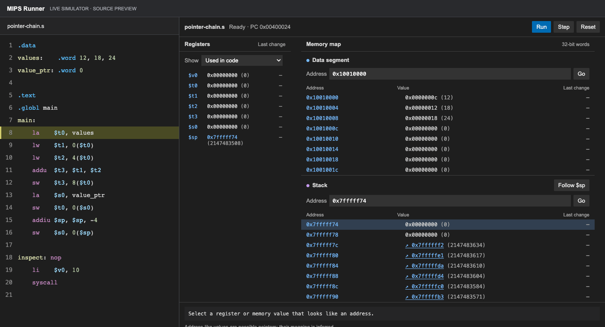
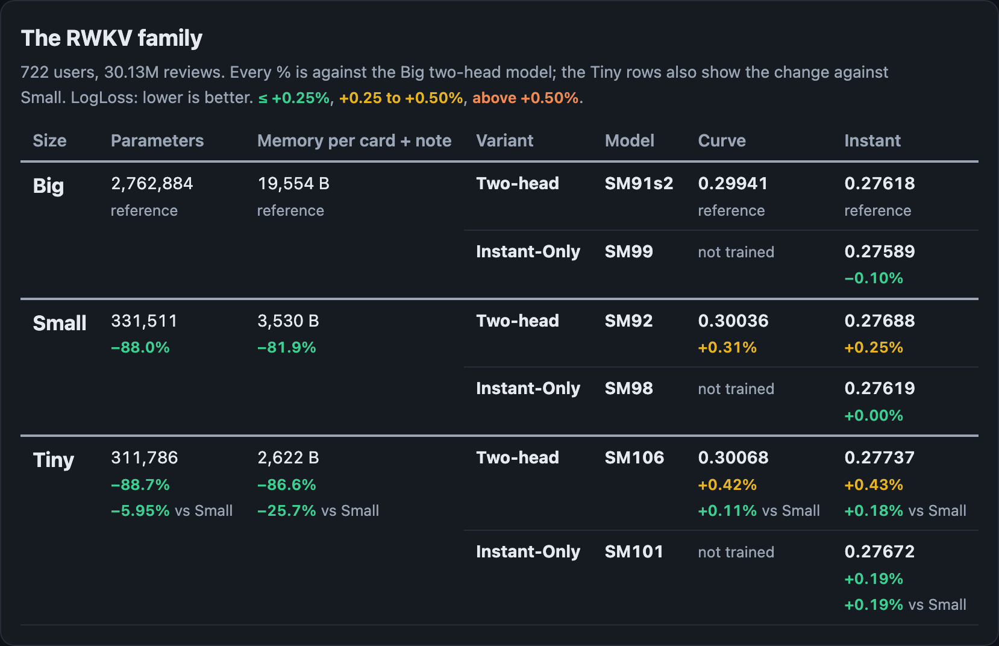
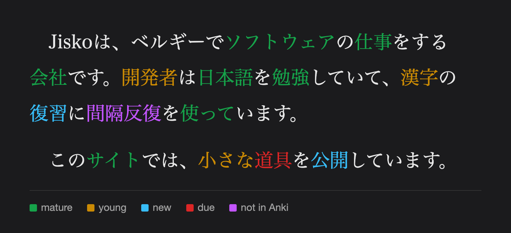
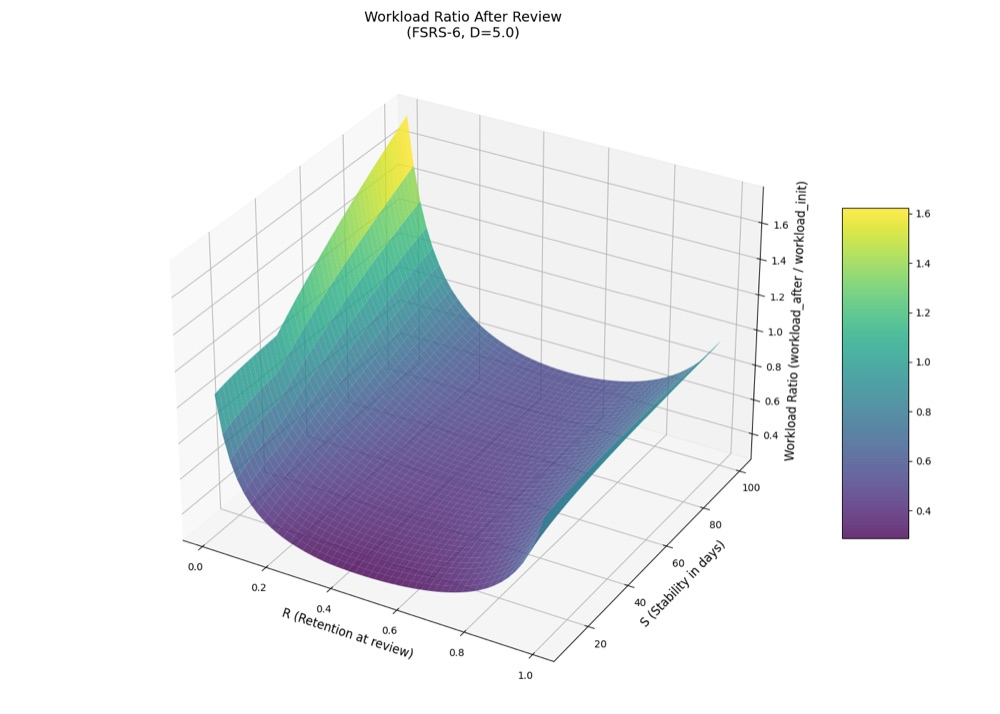
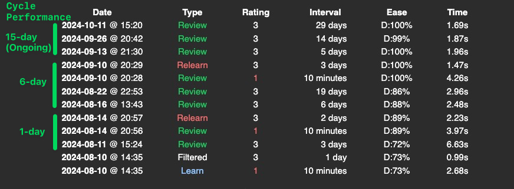

Projets open source
Jisko publie quelques outils open source, la plupart sous licence MIT.
MIPS Runner · 2026
Extension VS Code pour exécuter et déboguer de l'assembleur MIPS. Elle n'exige ni MARS ni Java : le simulateur SPIM tourne en WebAssembly dans l'éditeur. L'exécution avance instruction par instruction, avec les registres, la mémoire et les pointeurs.
VS Code Marketplace · Code source

RWKV Factory · 2026
Modèles RWKV qui estiment la probabilité de se souvenir d'une carte au moment de la réviser, pour les logiciels de répétition espacée. Ils sont entraînés sur le jeu de données public anki-revlogs-10k (environ 727 millions de révisions). L'entraînement est devenu 6,7 fois plus rapide, avec des résultats identiques bit à bit. Six modèles sont sortis en novembre 2026.
Présentation et tableaux de bord · Code source (anki-rwkv)

ッツ Ebook Reader, fork avec Anki · 2025–2026
Fork de ッツ Ebook Reader, le lecteur de livres numériques en ligne de ttu-ttu, conçu pour le japonais. Le fork colore chaque mot selon l'état de sa carte dans Anki : acquise, jeune, nouvelle, à réviser, ou absente des paquets.
Image : exemple reconstitué avec les couleurs du fork.
Code source · Projet d'origine

CardScheduler · 2025–2026
Module Anki pour le vocabulaire japonais. Il classe les nouvelles cartes selon ce qu'elles débloquent : connaître la lecture d'un kanji facilite d'autres mots. Le score tient compte de la familiarité avec chaque lecture, de la complexité du mot et des cartes de phrases. Le module repositionne ensuite les nouvelles cartes dans cet ordre.
Code source
FSRS Workload Analysis
Mesure la charge de révision selon les paramètres FSRS-6.
Code source


FSRS Preset Advisor
Module Anki qui aide à regrouper les préréglages FSRS.
Code source
Ces projets sont personnels et gratuits. Ils n'ont aucun lien avec les éditeurs des logiciels cités. Anki et Visual Studio Code sont des marques de leurs détenteurs. ッツ Ebook Reader est un projet de ttu-ttu, sous licence BSD-3-Clause.